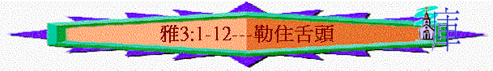

引言：雅3:5題及「舌頭」，你認為「舌頭」有甚麼功能？可以作甚麼事情？(試每人分享一樣，不要重覆)
雅3:1-12題及我們當怎樣對待「舌頭」？今日我們從聖經中看基督徒為何要勒住舌頭及不勒住又有甚麼惡果……
一.小心追求的事情(雅3:1-2)
1.
3:1題及「師傅」，何謂「師傅」？「師傅」可運用舌頭作甚麼事情？
2.
聖經是否說不要任何人作師傳？作師傅有甚麼益處？
3.
雅各在3:1提醒弟兄們甚麼事？為何「不要多人作師傳」？是甚麼意思？
4.
昔日的師傅有甚麼問題(參考太23:3-4)？
5.
若師傅行得好，會有更大的賞賜，行得不好為何有更重的判斷？
6.
雅各不鼓勵人單重視追求師傅，反而他要人當留心追求甚麼事？(3:2)
7. 通常人重視在高位上教訓教導人多些，還是多重視自己的言語有否過失？在你生活中有否看見一些人喜歡作師傅，但在言語及生命上卻有很多過失？
二.勒住舌頭的益處(雅3:2-4)
1.
3:2題及「勒住」，何謂「勒住」？
2.
勒住舌頭有甚麼益處？你同意嗎？
3. 3:3-4用了兩個比喻，試解釋兩個比喻的內容，及作者想透過比喻強調甚麼事情？
三.不勒住舌頭的禍患(雅3:5-8)
1.
3:5舌頭雖小，但它的影响力大不大？何謂「大話」？
2.
聖經用甚麼比喻表明它的影响力？
3.
舌頭運用不好，會有甚麼不好的影响？
4.
何謂「生命的輪子點起」？「從地獄�娷I着」是甚麼意思？
5.
不勒住舌頭除了對自己不好，對其他人又如何？聖經又引用甚麼比喻表明對人不好呢？
6. 在你生活、工作中，有否體會舌頭是「害死人的毒氣」？
四.不勒住舌頭的表現(雅3:9-12)
1.
3:9-10若信徒不勒住舌頭，他可能有甚麼表現？
2.
為何不能咒詛人？
3.
聖經用甚麼比喻強調不能頌讚神又咒詛人？
4.
若1-10分，1最低，10最高，你認為自己在控制舌頭滿意情度上有幾多分？
總結：在今次查經中，分享你的學習與得著
祈禱